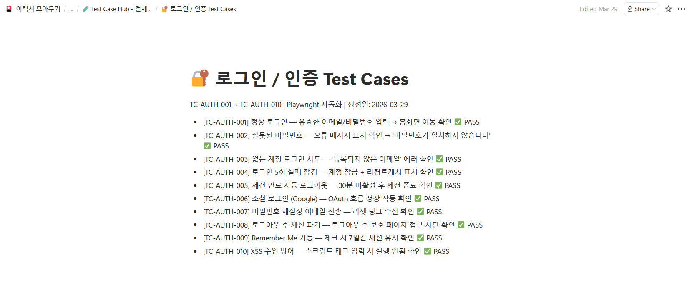
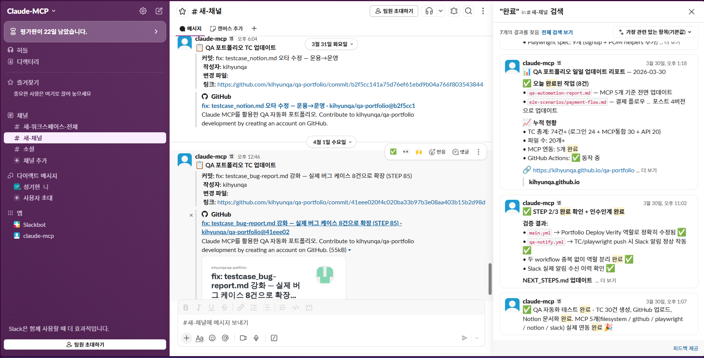

매 릴리즈 반복되는 TC 작성 · 문서화 · 팀 알림을 Claude Desktop + MCP 서버 5개로 한 흐름에 연결했습니다.
TC 생성 → E2E 테스트 → GitHub 커밋 → Notion 문서화 → Slack 알림
※ TC는 가상의 로그인·결제 서비스를 기준으로 만든 데모입니다.


| TC-ID | 구분 | 테스트 제목 | 기대 결과 | 우선순위 | |
|---|---|---|---|---|---|
| AUTH-001 | 해피패스 | 유효한 자격증명으로 로그인 | /dashboard 리다이렉트 | P1 | |
전제조건: 가입된 계정 존재 스텝: 이메일·비밀번호 입력 → 로그인 버튼 클릭 기대 결과: /dashboard로 리다이렉트, 세션 토큰 발급 확인 | |||||
| PAY-HP-001 | 해피패스 | 정상 카드로 결제 완료 | 주문 완료 페이지 이동, 이메일 발송 | P1 | |
전제조건: 결제 테스트 카드 준비 스텝: 장바구니 → 결제 페이지 → 테스트 카드 입력 → 결제 완료 기대 결과: 주문 완료 페이지 이동, 주문번호 생성 확인 | |||||
| AUTH-007 | 네거티브 | 5회 로그인 실패 후 계정 잠금 | 계정 잠금 또는 인증 요청 | P1 | |
전제조건: 잘못된 비밀번호 준비 스텝: 오류 비밀번호로 5회 연속 로그인 시도 기대 결과: 5회 초과 시 계정 잠금 메시지 노출, 추가 시도 차단 | |||||
| PAY-N-005 | 네거티브 | 잔액 부족 카드 결제 시도 | 결제 실패 메시지, 주문 미생성 | P1 | |
전제조건: 잔액 부족 테스트 카드 준비 스텝: 잔액 부족 카드로 결제 시도 → PG사 응답 확인 기대 결과: 결제 실패 메시지 노출, 주문 미생성 확인 | |||||
| SEC-N-002 | 네거티브 | 만료된 JWT 토큰으로 API 호출 | 403 Forbidden, 데이터 노출 없음 | P1 | |
전제조건: 만료된 JWT 토큰 보유 스텝: 만료 토큰 Authorization 헤더에 삽입 → 보호된 API 호출 기대 결과: 403 Forbidden 확인, 데이터 노출 없음 | |||||
| PAY-012 | 엣지케이스 | 다중 상품 + 할인 소수점 오차 | 합산 후 할인 1회, 오차 0원 | P1 | |
전제조건: 소수점 단가 상품 3종, 할인쿠폰 1매 스텝: 장바구니 담기 → 쿠폰 적용 → 결제 기대 결과: 할인은 최종 합산 후 1회만 적용, 소수점 반올림 오차 0원 | |||||